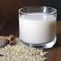
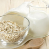
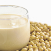
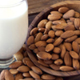
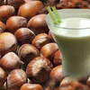
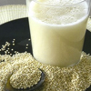
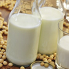

Bebidas vegetales
o "leches" vegetales
···
Las bebidas vegetales son ricas en vitaminas y sales minerales.
Contiene grasas insaturadas, más beneficiosas para la salud que las grasas saturadas contenidas en la leche de origen animal.
Mientras que la leche de vaca contiene 21 mg de colesterol por cada porción de 250 ml, la mayoría de las bebidas vegetales no locontienen por ello suelen ser una buena alternativa.
Es mejor consumir aquellas bebidas vegetales ecológicas que no contengan azúcar añadido.
Bebidas

Arroz

Avena

Soja
Espelta

Almendras

Avellanas

Sésamo

Quinoa

Alpiste